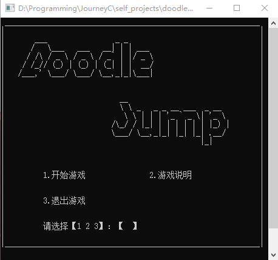
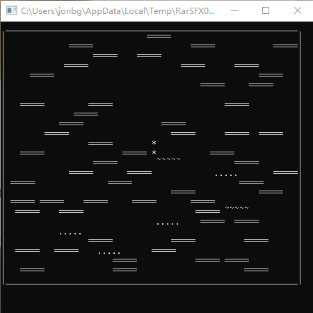

Doodle Jump
用 C 语言在命令行下复刻经典手机游戏涂鸦跳跃。
介绍 Introduction
把红旗插上无穷的高峰！
向上跳跃，不要坠入虚空！
玩法 Howto
用方向键操纵小人左右移动，当小人落在跳板上时会向上弹起。
左移： A 或 ←
右移： D 或 →
截图 Screenshots


主要贡献者 Main Contributors
@lhy ：Backend Developer
@lz ：Frontend Developer
@Jonbgua ：Program Manager, Software Architect